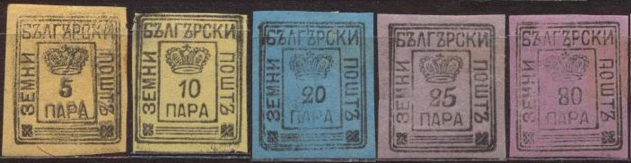
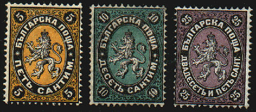
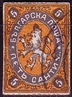
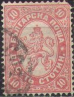
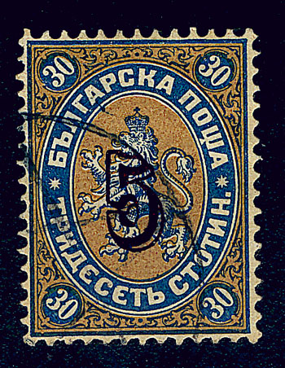

I've been told that this is a genuinly used 10 p stamp
Bulgarie - Bulgarien
Return To Catalogue - Bulgaria 1896-1915 - Bulgaria 1916-1919 - Bulgaria 1920 onwards - Bulgaria fiscal stamps, part 1 - Bulgaria fiscal stamps, part 2 - Miscellaneous
Note: on my website many of the
pictures can not be seen! They are of course present in the
catalogue;
contact me if you want to purchase it.
Some bogus stamps for Bulgaria exist, examples:

According to 'Les Timbres de Fantaisie' of Georges Chapier these stamps were issued when Bulgaria was first founded and they should have served for 8 days. The following values exist: 1 p black on white, 5 p black on orange, 10 p black on yellow, 20 p black on blue, 25 p black on violet, 25 p black on green(?), 50 p black on green and 80 p black on violet.
I've been told that this is a genuinly used 10 p stamp



5 c black and orange 10 c black and green 25 c black and lilac 50 c black and blue 1 Fr black and red
Surcharged

'50' on 1 Fr black and red
Value of the stamps |
|||
vc = very common c = common * = not so common ** = uncommon |
*** = very uncommon R = rare RR = very rare RRR = extremely rare |
||
| Value | Unused | Used | Remarks |
| 5 c | *** | *** | |
| 10 c | R | *** | |
| 25 c | *** | *** | |
| 50 c | R | *** | |
| 1 F | *** | *** | |
| Surcharged | |||
| 50 on 1 F | RR | RR | |
I have seen postal stationery in the same design in the values: 10 c red (only one colour!).
Forgeries exist of these stamps (see
http://home.no.net/bhb1/stamps.htm for more details).The
distinghuishing characteristics of the forgeries are (according
to this website)
1. Line perforation (see the corners)
2. Missing or deformed triangle under the cyrillic letter 'W' (to
the right of the tail of the lion)
3. Uneven or deformed star (5 ct, 10 ct, 50 ct, 1 fr)
4. Often missing background colour by the lion's hind leg
5. Left front leg touches the frame
6. Flat underside of head of 'T' in 'CENT.' (25 ct)
7. Narrow head of 'G' in 'BULGARSKA'
8. The colours are often different from the genuine stamps
Example of a Fournier forged surcharge (taken from a Fournier Album of Philatelic Forgeries):

Billig mentions another forgery of the 5 c, in which the 'K' of 'APCKA' has turned into an 'R'.



1 st violet and yellow 2 st green and yellow 3 st red and grey 3 st orange and yellow 5 st black and yellow 5 st green and yellowish green 10 st black and green 10 st red and lilac 15 st red and green 15 st lilac 25 st black and lilac 25 st blue (2 shades) 30 st blue and brown 30 st violet and green 50 st blue and lilac 1 L black and red (1887) Surcharged


'01' (red) on 2 st green '3' on 10 st red '5' (black or red) on 30 st blue and brown '15' (red) on 25 St blue
Value of the stamps |
|||
vc = very common c = common * = not so common ** = uncommon |
*** = very uncommon R = rare RR = very rare RRR = extremely rare |
||
| Value | Unused | Used | Remarks |
| 1 st | c | c | type with 'EDNHb': ** |
| 2 st | c | c | Type with 'DBA': * |
| 3 st red and grey | * | * | |
| 3 st orange and yellow | c | c | I've seen this stamp with inverted background. |
| 5 st black and yellow | * | * | |
| 5 st green | * | c | |
| 10 st black and green | *** | *** | |
| 10 st red and lilac | * | c | |
| 15 st red and green | *** | *** | |
| 15 st lilac | * | c | |
| 25 st black and lilac | R | *** | |
| 25 st blue | ** | c | |
| 30 st blue and brown | *** | *** | |
| 30 st violet and green | *** | * | |
| 50 st | *** | * | |
| 1 L | *** | *** | |
| Surcharged | |||
| 01 on 2 st | c | c | I've seen surcharged and non-surcharged stamps se-tenant. |
| 3 on 10 st | R | R | |
| 5 (red) on 30 st | R | R | Surcharge in black: RRR |
| 15 on 25 st | R | R | |
For the specialist: the values 1 st and 2 st exist with 2 different types of value inscriptions 'EDHA' and 'EDNHb' for the 1 st value, 'DBb' and 'DBA' for the 2 st value.
I have seen postal stationery in the same design in the values: 5 st green and 10 st red.
Forgeries exist of these stamps (see http://home.no.net/bhb1/stamps.htm for more details).
Forged overprints (see also http://home.no.net/bhb1/stamps.htm), examples:


(Forged overprints)
Example of Fournier forged surcharges (taken from a Fournier Album of Philatelic Forgeries):
Forged Fournier cancels for Bulgaria as can be found in the
Fournier Album of Philatelic Forgeries (they are listed under
Bulgaria, but could actually be forged cancels of Russia).
According to The Philatelic Journal of America; August 1894, No 116, Vol XII, page 51; the first Bulgarian Exchange Society of Philippopoli, and especially its vice-president Crista Genoff has made forgeries of these overprints. A full description can be found there.
New values of this type were issued in 1927 and 1930:


(1927 and 1930 issue, the word 'STOTINKI' is written differently
and some colours are different)

1 s lilac 2 s grey 3 s brown 5 s green 10 s red 15 s orange 25 s blue 30 s brown 50 s green 1 L red 2 L red 3 L black Surcharged


'3' and text (green) on 1 s lilac (1916, issued for the Red Cross) '5' and bar on 3 s brown '10' on 50 s green '15' on 30 s brown Overprinted '1909'
1 s lilac 5 s green Overprinted '1909' and surcharged

5 on 30 s brown 10 on 15 s orange 10 (red) on 50 s green
This issue exists with various perforations.
Value of the stamps |
|||
vc = very common c = common * = not so common ** = uncommon |
*** = very uncommon R = rare RR = very rare RRR = extremely rare |
||
| Value | Unused | Used | Remarks |
| 1 s | c | c | |
| 2 s | c | c | |
| 3 s | c | c | |
| 5 s | c | vc | |
| 10 s | * | c | |
| 15 s | c | vc | |
| 25 s | * | c | |
| 30 s | * | c | |
| 50 s | * | c | |
| 1 L | * | * | |
| 2 L | ** | ** | |
| 3 L | *** | *** | |
| Surcharged | |||
| 3 on 1 s | *** | *** | Forged surcharges often have a different colour of green |
| 5 on 3 s | * | * | |
| 10 on 50 s | * | * | |
| 15 on 30 s | c | c | Forged surcharges exist. |
| With '1909' overprint | |||
| 1 s | c | c | |
| 5 s | * | * | |
| 5 on 30 s | * | * | |
| 10 on 15 s | * | * | |
| 10 on 50 s | * | * | |
I have seen postal stationery in the same design in the values: 5 s green, 10 s red, 15 s orange.
A forgery of the 2 L values can be found at http://home.no.net/bhb1/stamps.htm.
For stamps of Bulgaria from 1896 to 1915 click here.
A very nice site on stamps of Bulgaria and its forgeries: http://home.no.net/bhb1/stamps.htm


{kind=link}
{kind=link}
{kind=link}